QUALITY
暮らしの快適性と安全性を高める、
こだわり尽くした住まい。
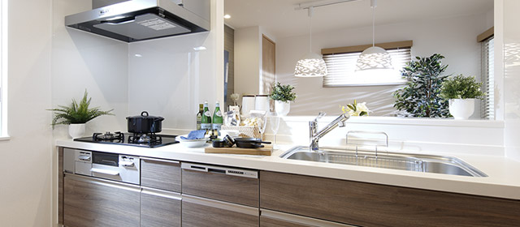
キッチン
Kitchenキッチン
- 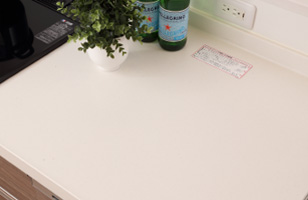
- 人造大理石ワークトップ
- 高級感のある質感と肌触りが魅力の人造大理石天板。汚れが染み込みにくいので、簡単なお手入れで汚れが落とせます。
- 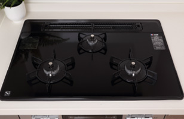
- ガラストップタイプ 3口コンロ
水無両面焼きグリル - 衝撃やキズへの強さと美しさを併せ持つトッププレート。汚れがこびりつきにくく、お手入れが簡単です。
- ガラストップタイプ 3口コンロ
- 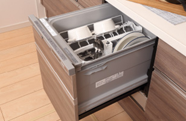
- 食器洗い乾燥機
- 食器の出し入れがしやすい低音設計のスライドオープン式。手洗いに比べ節水効果が高く、洗浄から乾燥まで、食後の水仕事を軽減します。
- 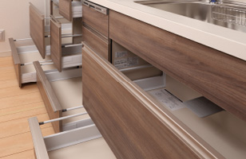
- ベースキャビネット（足元スライドタイプ）
- キッチンの足元に収納を設け、有効利用する新しい収納システム。スライド式で軽く引き出せるので、収納性と機能性がアップします。
Bathroom & Powder room 浴室・洗面
- 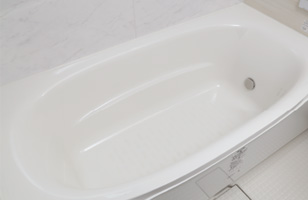
- サーモバスS
- お湯が冷めにくく、浴槽保温材と保温組フタの“ダブル保温”構造。ご家族の入浴時間がバラバラでも追い焚きが少なくて済みます。
- 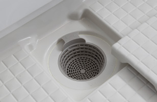
- くるりんポイ排水口
- 浴槽排水を利用した強い流れが排水口内に渦を発生させ、ゴミを小さくまとめます。排水口を外してゴミ箱に捨てられるので快適です。
- 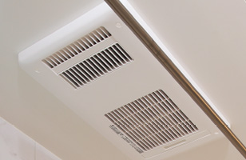
- 浴室暖房乾燥機
- 雨の日の洗濯に浴室内で衣類を乾かせる便利な浴室暖房乾燥機。ヒートショックを軽減させる浴室暖房機能や夏の入浴に快適な涼風機能付き。
- 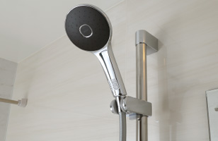
- スライドフック付握りバー
- 高級感のあるメタル調の握りバーを設置。スライドフック付でシャワーの高さを自在に調節でき、便利です。
- 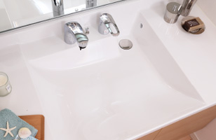
- ボウル一体型カウンター
- 洗面ボウルと継ぎ目のない一体型のカウンターで見た目もスッキリ。目地に汚れがつかないので簡単なお手入れで清潔感を保てます。
- 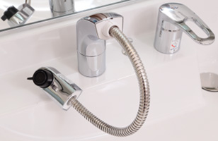
- 洗髪シャワー水栓
- シャワーノズルを引き出せるので、洗髪も可能。また、洗面ボウルの隅々まで流せるので、お掃除にもとても便利です。
- 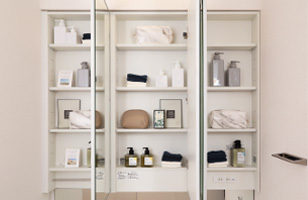
- 鏡裏収納付三面鏡
- 鏡裏にドライヤーやシェーバー、メイクグッズなどをしまえる収納スペースを設置。洗面台周りがスッキリと片付きます。
- 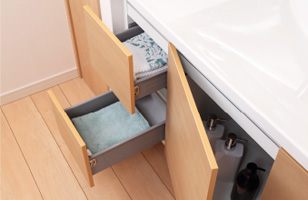
- 開き扉+二段引出し付
- 洗面カウンター下には開き戸タイプの収納と二段引出しをセット。しまうものの大きさや使い勝手に合わせて使い分けられます。
Comfort 快適設備
- 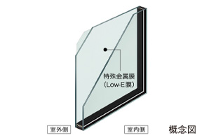
- Low-E複層ガラス
- 居室の窓には高い遮熱・断熱性を備えたLow-E複層ガラスを採用。特殊金属膜効果で太陽の熱線を約56％カット。冷暖房コストが節約できます。
- 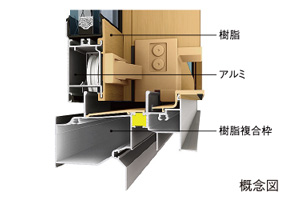
- 防露性に優れたサッシ
- 内装材と接する部分に熱を伝えにくい樹脂を使用することで結露を抑制。汚れの進行やカビ・ダニ対策に効果的です。
- 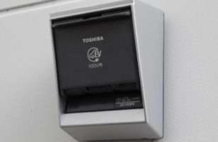
- 電動自動車用コンセント
- カーポートのコンセント（100V）は電気自動車用（200V）に対応可能です。
- ※ブレーカーの変更および差込口の変更が必要です（有償）。
- 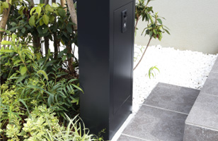
- 宅配BOX内蔵機能門柱
- ご不在時でも宅配物を受け取ることができる洗練されたデザインの宅配ボックス付き機能門柱。すっきりとした玄関まわりを演出します。
- 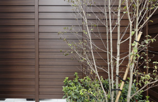
- 木調目隠しフェンス
- 木のぬくもりと家具のような上質感にこだわり細部までリアルな木質感を表現した、心地良い温もりを感じられる木調目隠しフェンス。
- 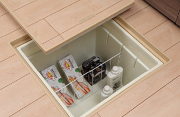
- キッチンに床下収納
- 食品のストックや日常はあまり使わない物を収納するのに便利な床下収納をキッチン（一部洗面室にも設置）に設置しました。

- 高効率TES熱源機エコジョーズ
- CO2の排出を抑え燃焼効率を高めた、環境と家計に優しい給湯器を採用しています。
- 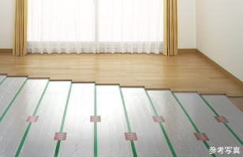
- TES温水式床暖房
- リビング・ダイニング（一部洋室にも設置）には空気を汚さず、足元から室内全体を温めるTES温水式床暖房を標準搭載しています。
Security セキュリティ
- 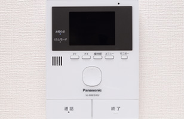
- テレビモニターホン
- カラーモニター画面で来客とハンズフリーで対話できる動画録画機能付モニターホン。持ち運び可能なワイヤレス子機でも来客応対ができます。
- 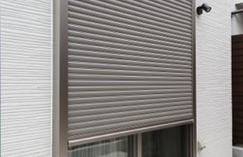
- 電動シャッター
- サッシの外側を強度の高いシャッターで守るため、優れた防犯性を発揮。リモコン電動式のため開け閉めが簡単。（1階掃き出しサッシのみ）
- 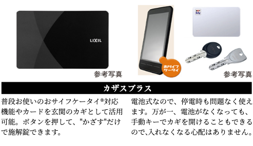
Structure 構造
- 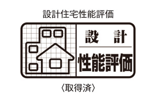
- 住宅性能評価書付き住宅
- 確かな安心を実感できるよう、全邸が住宅性能表示制度に対応。
- 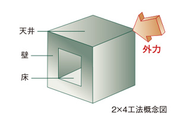
- 耐震性に優れた6面体構造
- 床・壁・天井を枠材と面材で一体化させた6面体構造は、地震などの外力を面で受け止めて分散・吸収します。
- 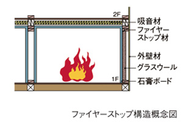
- ファイヤーストップ構造
- 万一の火災の時も、火のまわりを遅らせるファイヤーストップ構造と、防火素材の採用により延焼・類焼しにくい構造です。
- 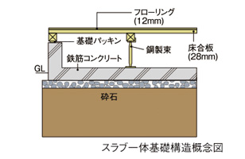
- ベタ基礎工法
- 基礎部分には耐震性に優れたスラブ一体型基礎を採用。地震・台風はもとより、不等沈下の防止、防湿性や防蟻性に優れた基礎構造です。
-
- ホルムアルデヒド対策
- 建材や内装材(建築基準法上の特定建材)には、JIS（日本工業規格）やJAS（日本農林規格）によって定められたホルムアルデヒド発散量が少ない素材を採用。健康的な住まいづくりを追求しています。
- 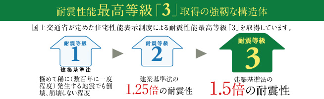
-
- 耐震性能最高等級「3」取得の強靭な構造体
- 極めてまれに発生する大きな地震（震度6強～7程度）の1.5倍の力に対して建物が倒壊・崩壊しない程度の強さを示します。